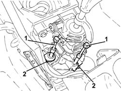
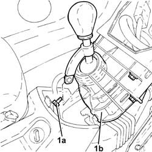
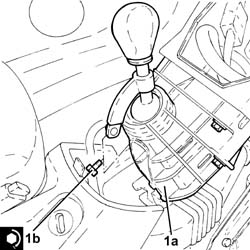

2125C32 GEAR CONTROL LEVER MOUNT - R R
- Path
- Procedures > 21 GEARBOX UNIT > 2125 MANUAL GEARBOX EXTERNAL CONTROLS - R.R. > 2125C MANUAL GEARBOX EXTERNAL CONTROL (CABLES) > 2125C32 GEAR CONTROL LEVER MOUNT - R R
- Kind
- repair procedure (removal / refitting; the operation number is the code)
- Applies to
- engines: 1.8, 2.2, 1.9 JTD 8v, 1.9 JTD 16v; all production periods
- Interactive page
- https://sloeber94.github.io/elrnDB-fCrm/en/#/194000459
Applies to: engines: 1.8, 2.2, 1.9 JTD 8v, 1.9 JTD 16v; all production periods
 Removing
Removing
 Refitting
RefittingOp. 7040A65 CONSOLE SIDE CLOSING (ONE) - R.R.
(Both).
Op. 7040A44 LEFT DASHBOARD SIDE TRIM - R.R.
Op. 5010C57 LEFT LOWER AIR DIFFUSER - R R
Op. 7040A26 STEERING COLUMN TRIM - R+R
Op. 7040A30 LEFT LOWER DASHBOARD TRIM - R.R.
Op. 5580C23 DRIVE SIDE KNEE PROTECTION AIR BAG MODULE R. R.
Op. 7040A24 LOWER FACIA COVER TRIM - R+R
Op. 7040A45 RIGHT DASHBOARD SIDE TRIM - R.R.
Op. 5570T85 CD/AUDIO PLAYER LOADER - R R
Op. 7040A31 DASHBOARD COMPARTMENT ASSEMBLY - R.R.
Op. 7040A56 SWITCH UNIT IN DASHBOARD - R.R.
Op. 5580P12 CONNECT PANEL REPLACE
Op. 7040A85 R R HANDLE FOR FRONT SEAT FORE AND AFT ADJUSTMENT
Op. 5040D18 AIR CONDITIONING CONTROL UNIT - R.R.
Op. 7040A60 UNDERDASHBOARD TRIM - R.R.
1. Disconnect the gear selector and engagement cables from the manual gearbox control lever.
2. Undo the clips and disconnect the gear selector and engagement cables from the manual gearbox control lever mounting.

Applies to: engines: 1.8, 2.2, 1.9 JTD 8v, 1.9 JTD 16v; all production periods
1. Undo the bolts (1a) and remove the gearbox control lever support (1b).

Applies to: engines: 1.8, 2.2, 1.9 JTD 8v, 1.9 JTD 16v; all production periods
Refitting
Removing1. Place the gearbox control lever support (1a) in its housing and secure it tightening the bolts (1b) to the recommended torque.
Component | Fastening | dia | Value (daNm) | Validity |
|---|---|---|---|---|
Gearbox manual control lever support | Bolt | M8 | 2.5 | 1.8 2.2 |
Component | Fastening | dia | Value (daNm) | Validity |
|---|---|---|---|---|
Gearbox manual control lever support | Bolt | M8 | 2.5 | 1.9 JTD 8v 1.9 JTD 16v |

Applies to: engines: 1.8, 2.2, 1.9 JTD 8v, 1.9 JTD 16v; all production periods
- Secure the gear selection and engagement cable links to the gearbox control lever support and do up the clips.
- Connect the gear selector and engagement cables to the manual gearbox control lever.
Op. 7040A60 UNDERDASHBOARD TRIM - R.R.
Op. 5040D18 AIR CONDITIONING CONTROL UNIT - R.R.
Op. 7040A85 R R HANDLE FOR FRONT SEAT FORE AND AFT ADJUSTMENT
Op. 5580P12 CONNECT PANEL REPLACE
Op. 7040A56 SWITCH UNIT IN DASHBOARD - R.R.
Op. 7040A31 DASHBOARD COMPARTMENT ASSEMBLY - R.R.
Op. 5570T85 CD/AUDIO PLAYER LOADER - R R
Op. 7040A45 RIGHT DASHBOARD SIDE TRIM - R.R.
Op. 7040A24 LOWER FACIA COVER TRIM - R+R
Op. 5580C23 DRIVE SIDE KNEE PROTECTION AIR BAG MODULE R. R.
Op. 7040A30 LEFT LOWER DASHBOARD TRIM - R.R.
Op. 7040A26 STEERING COLUMN TRIM - R+R
Op. 5010C57 LEFT LOWER AIR DIFFUSER - R R
Op. 7040A44 LEFT DASHBOARD SIDE TRIM - R.R.
Op. 7040A65 CONSOLE SIDE CLOSING (ONE) - R.R.
(Both).
Topics linked from this page (15)
- 5010C57 LEFT LOWER AIR DIFFUSER - R R
- 5040D18 AIR CONDITIONING CONTROL UNIT - R.R.
- 5570T85 CD/AUDIO PLAYER LOADER - R R
- 5580C23 DRIVE SIDE KNEE PROTECTION AIR BAG MODULE R. R.
- 5580P12 CONNECT PANEL REPLACE
- 7040A24 LOWER FACIA COVER TRIM - R+R
- 7040A26 STEERING COLUMN TRIM - R+R
- 7040A30 LEFT LOWER DASHBOARD TRIM - R.R.
- 7040A31 DASHBOARD COMPARTMENT ASSEMBLY - R.R.
- 7040A44 LEFT DASHBOARD SIDE TRIM - R.R.
- 7040A45 RIGHT DASHBOARD SIDE TRIM - R.R.
- 7040A56 SWITCH UNIT IN DASHBOARD - R.R.
- 7040A60 UNDERDASHBOARD TRIM - R.R.
- 7040A65 CONSOLE SIDE CLOSING (ONE) - R.R.
- 7040A85 R R HANDLE FOR FRONT SEAT FORE AND AFT ADJUSTMENT